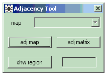

Adjacency Matrices
Producing adjacency matrices
GeoBUGS includes an option to produce a data file containing the adjacency matrix for any map loaded on the system. This file is in a format required by the
car.normal,
car.l1 and
mv.car conditional autoregressive distributions available in the OpenBUGS program.
* Select the
Adjacency Tool option from the
Map menu.

* Select the name of the map you wish to draw from the pull-down menu labelled
Map and click on
adj map. The selected map will then appear in a window.
* Typing the ID number of a region in the bottom white box and clicking
shw region will cause the specified region to be highlighted in red on the map; its neighbours (defined to be any region adjacent to the red region) are highlighted in green.
A region and its neighbours can also be highlighted by positioning the mouse cursor over the required region on the map and clicking with the left button.* Click on the
adj matrix button to produce a text file containing the adjacency matrix in a form suitable for loading as data into OpenBUGS for use with the
car.normal,
car.l1 and
mv.car distributions. (See
appendix 1 for further details about these three distributions).
Note: when calculating which areas are adjacent to which others, GeoBUGS includes a 'tolerance' zone of 0.1 metres. This tolerance zone should not lead to spurious neighbours unless you forget to appropriately scale your distance units in the polygon file using the
Xscale and
Yscale options, or your map covers a tiny geographic region (in which case, artificially re-scaling the distance units for your map should overcome any problems).
Editing adjacency matrices
To remove a region from the set of neighbours for a specific area:
*
Highlight the specific area in red on the map;
* Place the mouse cursor over the region to be removed from the set of neighbours for the red area;
* Hold down the Ctrl key while clicking with the left mouse button. The removed area will no longer be highlighted in green.
To add a region to the set of neighbours for a specific area:
*
Highlight the specific area in red on the map;
* Place the mouse cursor over the region to be added to the set of neighbours for the red area
* Hold down the Ctrl key while clicking with the left mouse button. The additional area will then become highlighted in green.
Once you have finished editing the set of neighbours for each region on your map,
create the new adjacency matrix by clicking on the
adj matrix button.